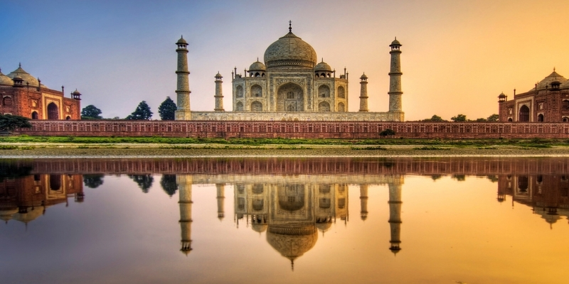
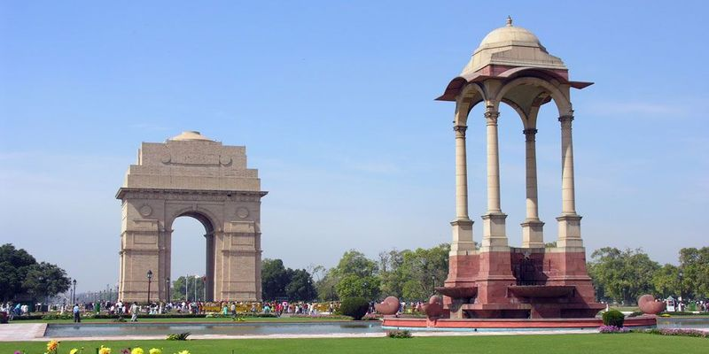

-

Taj Mahal
-

New Delhi, Capital of India
-
 Incredible India
Incredible India
Introduction
India (officially the Republic of India (Bhārat Gaṇarājya), is a country in South Asia. It is the seventh-largest country by area, the second-most populous country with over 1.2 billion people, and the most populous democracy in the world. Bounded by the Indian Ocean on the south, the Arabian Sea on the south-west, and the Bay of Bengal on the south-east, it shares land borders with Pakistan to the west; China, Nepal, and Bhutan to the north-east; and Burma and Bangladesh to the east. In the Indian Ocean, India is in the vicinity of Sri Lanka and the Maldives; in addition, Ind ia's Andaman and Nicobar Islands share a maritime border with Thailand and Indonesia.
The Indian economy is the world's tenth-largest by nominal GDP and third-largest by purchasing power parity (PPP). Following market-based economic reforms in 1991, India became one of the fastest-growing major economies; it is considered a newly industrialised country. However, it continues to face the challenges of poverty, corruption, malnutrition, inadequate public healthcare, and terrorism. A nuclear weapons state and a regional power, it has the third-largest standing army in the world and ranks ninth in military expenditure among nations. India is a federal constitutional republic governed under a parliamentary system consisting of 29 states and 7 union territories. India is a pluralistic, multilingual, and a multi-ethnic society. It is also home to a diversity of wildlife in a variety of protected habitats.